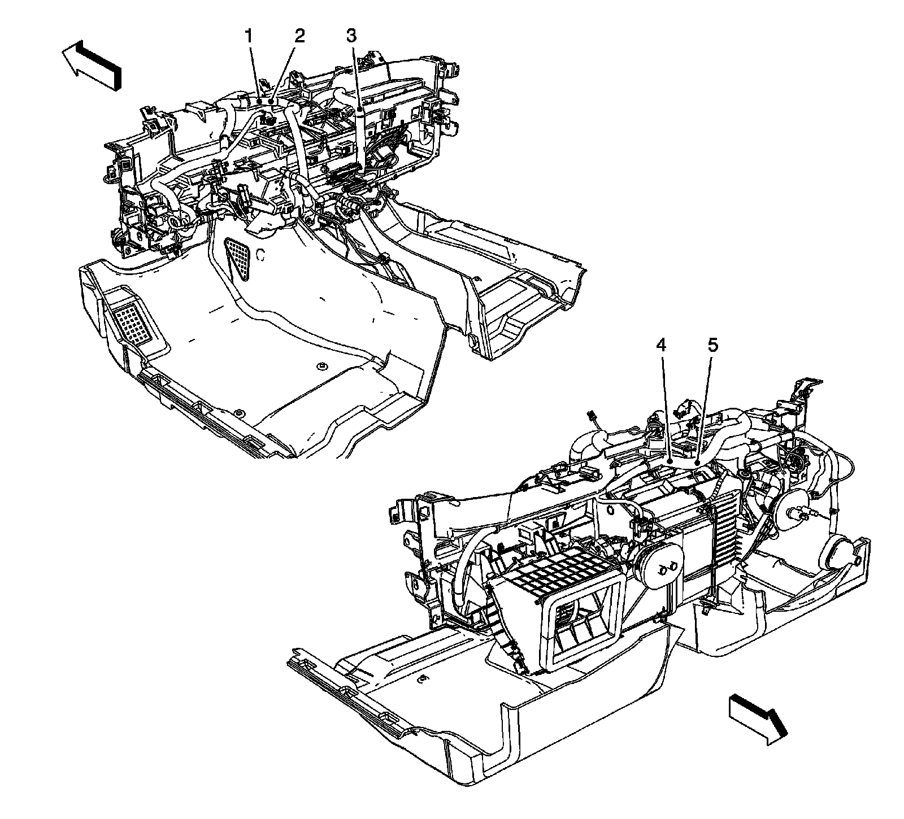
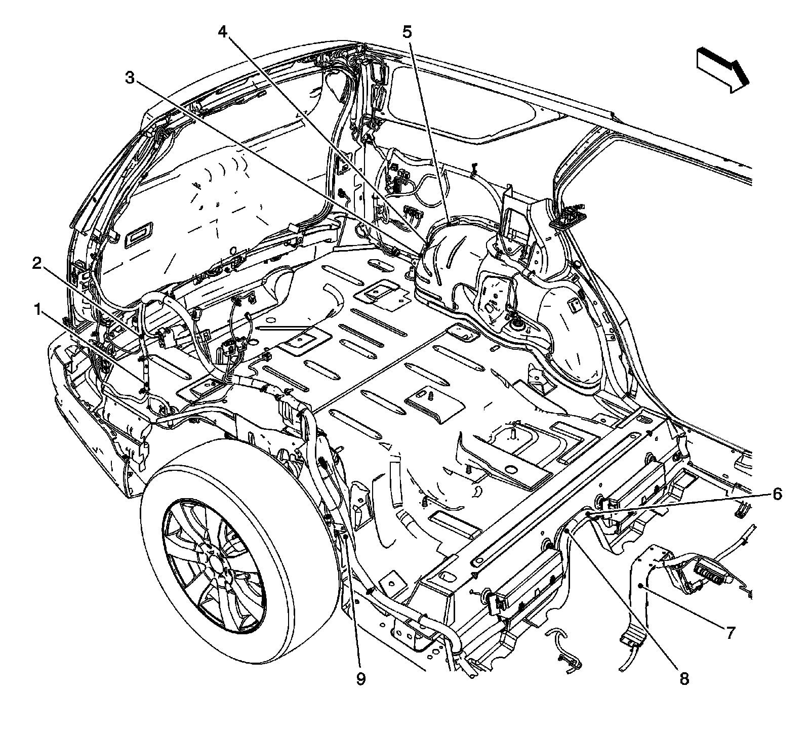
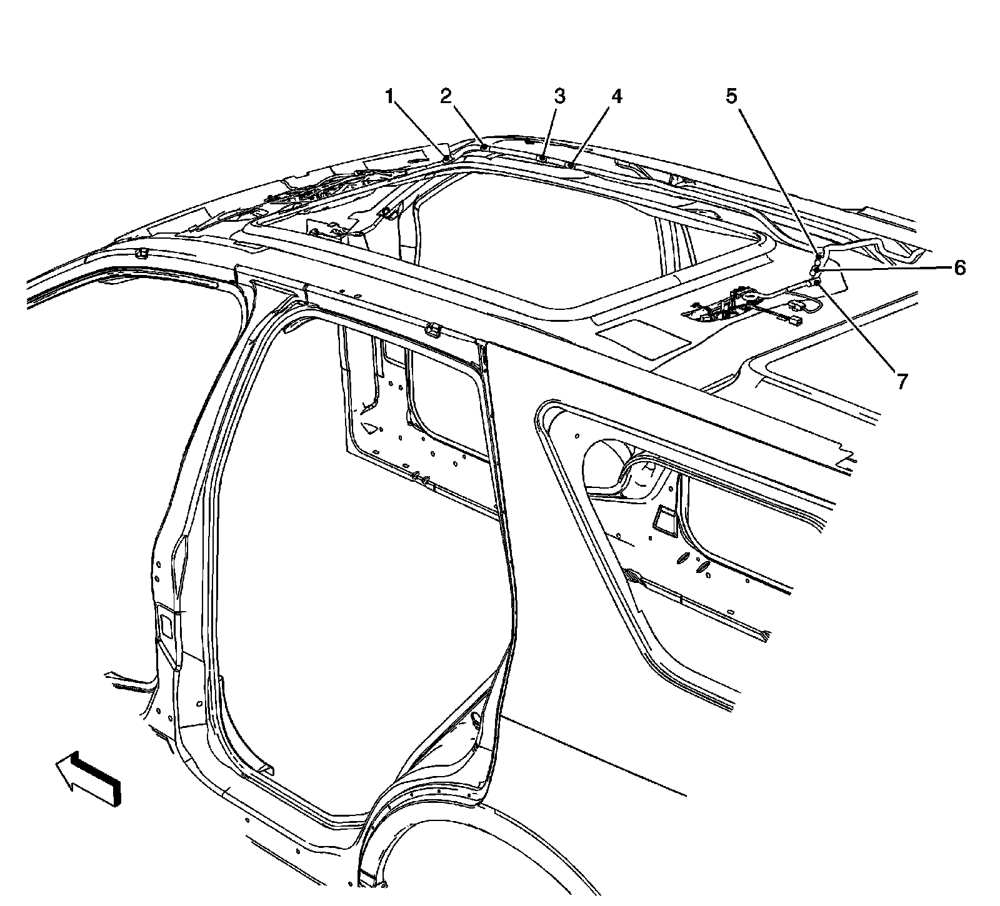

LHD
Harness Routing Views (LHD)
Instrument Panel Harness Splices

1 - J204
2 - J210
3 - J211
4 - J200
5 - J201
Body Harness Splices

1 - J402
2 - J401
3 - J404
4 - J410
5 - J403
6 - J303
7 - J305
8 - J304 (AH8)
9 - J406 (C57)
Headliner Splices

1 - J312
2 - J314
3 - J311
4 - J319 (CF5/C3B)
5 - J308 (C57)
6 - J408 (C57)
7 - J307 (C57)